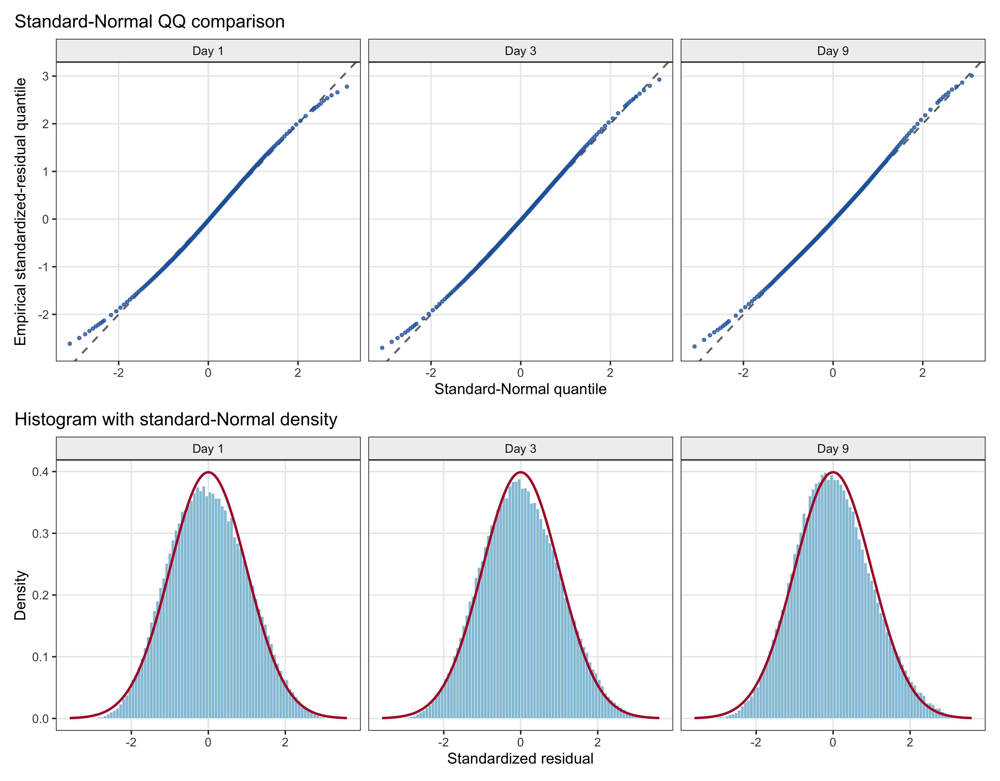
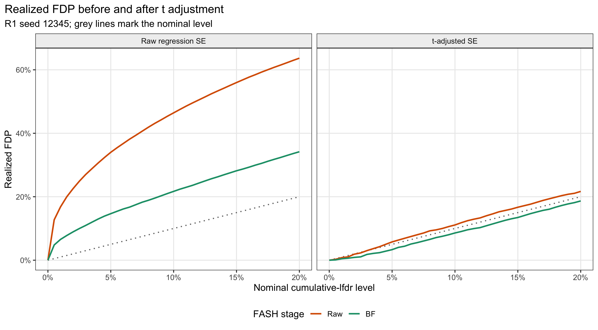

Last updated: 2026-08-20
Checks: 6 1
Knit directory: coderepo-local/
This reproducible R Markdown analysis was created with workflowr (version 1.7.2). The Checks tab describes the reproducibility checks that were applied when the results were created. The Past versions tab lists the development history.
The R Markdown is untracked by Git. To know which version of the R
Markdown file created these results, you’ll want to first commit it to
the Git repo. If you’re still working on the analysis, you can ignore
this warning. When you’re finished, you can run
wflow_publish to commit the R Markdown file and build the
HTML.
Great job! The global environment was empty. Objects defined in the global environment can affect the analysis in your R Markdown file in unknown ways. For reproduciblity it’s best to always run the code in an empty environment.
The command set.seed(20251109) was run prior to running
the code in the R Markdown file. Setting a seed ensures that any results
that rely on randomness, e.g. subsampling or permutations, are
reproducible.
Great job! Recording the operating system, R version, and package versions is critical for reproducibility.
Nice! There were no cached chunks for this analysis, so you can be confident that you successfully produced the results during this run.
Great job! Using relative paths to the files within your workflowr project makes it easier to run your code on other machines.
Great! You are using Git for version control. Tracking code development and connecting the code version to the results is critical for reproducibility.
The results in this page were generated with repository version c87957a. See the Past versions tab to see a history of the changes made to the R Markdown and HTML files.
Note that you need to be careful to ensure that all relevant files for
the analysis have been committed to Git prior to generating the results
(you can use wflow_publish or
wflow_git_commit). workflowr only checks the R Markdown
file, but you know if there are other scripts or data files that it
depends on. Below is the status of the Git repository when the results
were generated:
Ignored files:
Ignored: .DS_Store
Ignored: .Rhistory
Ignored: .Rproj.user/
Ignored: Rplots.pdf
Ignored: analysis/.DS_Store
Ignored: analysis/.Rhistory
Ignored: analysis/figure/
Ignored: code/.DS_Store
Ignored: code/.Rhistory
Ignored: code/revision_simulations/.DS_Store
Ignored: data/appendixB/
Ignored: data/dynamic_eQTL_real/
Ignored: data/revision_simulations/
Ignored: data/toy_example/
Ignored: output/dynamic_eQTL_real/
Ignored: output/pdf/
Ignored: output/playwright/
Ignored: output/revision_simulations/
Untracked files:
Untracked: analysis/revision_internal_evaluation_grid_mc_sensitivity.rmd
Untracked: analysis/revision_internal_fash_cl_manuscript_impact.rmd
Untracked: analysis/revision_internal_fash_discovery_variant_count.rmd
Untracked: analysis/revision_internal_fash_linear_real_data_ablation.rmd
Untracked: analysis/revision_internal_fashr_correlated_observation_model.rmd
Untracked: analysis/revision_internal_r1_normality_assumption.rmd
Untracked: analysis/revision_internal_small_m_clean_working_null_sensitivity.rmd
Untracked: analysis/revision_internal_small_m_matched_null_eb_sensitivity.rmd
Untracked: analysis/revision_internal_twenty_variant_per_gene_refit.rmd
Untracked: apps/
Untracked: code/revision_simulations/internal/covariance_estimation/run_design_propagated_null_correlation.R
Untracked: code/revision_simulations/internal/covariance_estimation/run_multigene_null_beta_covariance_exploration.R
Untracked: code/revision_simulations/internal/early_window_sensitivity/
Untracked: code/revision_simulations/internal/evaluation_grid_sensitivity/
Untracked: code/revision_simulations/internal/fash_cl_manuscript_impact/
Untracked: code/revision_simulations/internal/fash_discovery_variant_count/
Untracked: code/revision_simulations/internal/fash_linear_real_data_ablation/
Untracked: code/revision_simulations/internal/r1_known_truth_genotype_permutation/
Untracked: code/revision_simulations/internal/r1_normality_assumption/
Untracked: code/revision_simulations/internal/selected_signal_genotype_permutation/
Untracked: code/revision_simulations/r5_one_variant_per_gene/
Untracked: code/revision_simulations/shared/build_real_genotype_one_per_gene_cache.R
Untracked: code/revision_simulations/shared/real_genotype_one_per_gene.R
Untracked: code/revision_simulations/shared/test_linear_mixture_fash.R
Untracked: code/revision_simulations/shared/test_real_genotype_one_per_gene.R
Untracked: code/revision_simulations/shared/validate_r1_r2_linear_mixture_pairing.R
Untracked: code/revision_simulations/shared/validate_r1_r2_real_genotype_pairing.R
Unstaged changes:
Modified: analysis/dynamic_eQTL_real.rmd
Modified: analysis/index.Rmd
Modified: analysis/revision_balanced_variant_thinning.rmd
Modified: analysis/revision_combined_spiky_genotype_simulation.rmd
Modified: analysis/revision_functional_testing_simulation.rmd
Modified: analysis/revision_genotype_level_simulation.rmd
Modified: code/revision_simulations/README.md
Modified: code/revision_simulations/internal/covariance_estimation/run_global_pca_factor_visualization.R
Modified: code/revision_simulations/r1_random_bspline/reporting.R
Modified: code/revision_simulations/r1_random_bspline/run_random_bspline_mc_replication.R
Modified: code/revision_simulations/r2_spiky_transient/reporting.R
Modified: code/revision_simulations/r2_spiky_transient/run_combined_spiky_genotype_simulation.R
Modified: code/revision_simulations/r2_spiky_transient/run_spiky_transient_mc_replication.R
Modified: code/revision_simulations/r3_functional_testing/reporting.R
Modified: code/revision_simulations/r3_functional_testing/run_matched_functional_testing_mc_replication.R
Modified: code/revision_simulations/shared/simulation_functions.R
Note that any generated files, e.g. HTML, png, CSS, etc., are not included in this status report because it is ok for generated content to have uncommitted changes.
There are no past versions. Publish this analysis with
wflow_publish() to start tracking its development.
We use the fixed one-variant-per-gene subset (6,362 genes) and fit the original regression separately at Day 1, Day 3, and Day 9,
\[ Y_{gti}=\alpha_{gt}+\beta_{gt}G_{gi} +\sum_{k=1}^{5}\gamma_{gtk}\mathrm{PC}_{tik}+e_{gti}. \]
Each regression has 19 donors, seven fitted coefficients, and residual df 12. The conventional standardized residual is
\[ r_{gti}=\frac{e_{gti}}{s_{gt}\sqrt{1-h_{gtii}}}, \]
the quantity returned by rstandard() for an ordinary
linear model. We compare it with the standard Normal as in a traditional
regression diagnostic. Days are not pooled; within each day, the plot
summarizes the 19 residuals from each of the 6,362 gene-specific
regressions.
# Retain the conventional standardized residual from every valid gene-specific
# regression, and set the requested Day 1, Day 3, Day 9 panel order explicitly.
residual_plot_data <- standardized_residuals[
standardized_residuals$day %in% c(1L, 3L, 9L),
c("day", "day_label", "standardized_residual"),
drop = FALSE
]
residual_plot_data$day_label <- factor(
residual_plot_data$day_label,
levels = c("Day 1", "Day 3", "Day 9")
)
# For each day, compare empirical standardized-residual quantiles with the
# corresponding standard-Normal quantiles on one shared probability grid.
qq_probabilities <- c(
seq(0.001, 0.010, by = 0.001),
seq(0.015, 0.985, by = 0.005),
seq(0.990, 0.999, by = 0.001)
)
residual_qq_plot_data <- do.call(rbind, lapply(
levels(residual_plot_data$day_label),
function(current_day) {
current_residuals <- residual_plot_data$standardized_residual[
residual_plot_data$day_label == current_day
]
data.frame(
day_label = current_day,
normal_reference_quantile = stats::qnorm(qq_probabilities),
empirical_quantile = as.numeric(stats::quantile(
current_residuals,
probs = qq_probabilities,
names = FALSE,
type = 8
)),
stringsAsFactors = FALSE
)
}
))
residual_qq_plot_data$day_label <- factor(
residual_qq_plot_data$day_label,
levels = levels(residual_plot_data$day_label)
)
residual_qq_plot <- ggplot2::ggplot(
residual_qq_plot_data,
ggplot2::aes(
x = normal_reference_quantile,
y = empirical_quantile
)
) +
ggplot2::geom_abline(
intercept = 0,
slope = 1,
color = "grey45",
linewidth = 0.7,
linetype = 2
) +
ggplot2::geom_point(
color = "#2166ac",
size = 0.9,
alpha = 0.75
) +
ggplot2::facet_wrap(ggplot2::vars(day_label), nrow = 1) +
ggplot2::labs(
title = "Standard-Normal QQ comparison",
x = "Standard-Normal quantile",
y = "Empirical standardized-residual quantile"
) +
normality_theme()
# Overlay the standard-Normal density on density-scaled histograms of the same
# day-specific standardized residuals shown in the QQ plots.
normal_reference_density <- data.frame(
standardized_residual = seq(-3.6, 3.6, length.out = 1001L)
)
normal_reference_density$density <- stats::dnorm(
normal_reference_density$standardized_residual
)
residual_histogram_plot <- ggplot2::ggplot(
residual_plot_data,
ggplot2::aes(x = standardized_residual)
) +
ggplot2::geom_histogram(
ggplot2::aes(y = ggplot2::after_stat(density)),
binwidth = 0.08,
boundary = 0,
fill = "#92c5de",
color = "white",
linewidth = 0.15
) +
ggplot2::geom_line(
data = normal_reference_density,
ggplot2::aes(x = standardized_residual, y = density),
inherit.aes = FALSE,
color = "#b2182b",
linewidth = 0.9
) +
ggplot2::facet_wrap(ggplot2::vars(day_label), nrow = 1) +
ggplot2::coord_cartesian(xlim = c(-3.6, 3.6)) +
ggplot2::labs(
title = "Histogram with standard-Normal density",
x = "Standardized residual",
y = "Density"
) +
normality_theme()
residual_qq_plot / residual_histogram_plot +
patchwork::plot_layout(heights = c(1.05, 0.95))
Figure 1. Traditional standardized-residual diagnostics for the fixed one-variant-per-gene real-data subset, shown separately for Day 1, Day 3, and Day 9. The upper row contains standard-Normal QQ plots. The lower row contains density-scaled histograms with the standard-Normal density overlaid in red. Each day contains 120,878 residuals from 6,362 regressions with 19 donors and residual df 12.
# Report the exact day-specific denominators, distribution summaries, and
# two-sided exceedance rates at standard-Normal 5%, 1%, and 0.1% cutoffs.
tail_rate_005 <- residual_tail_summary[
residual_tail_summary$nominal_two_sided_rate == 0.05,
c("day", "observed_two_sided_rate"),
drop = FALSE
]
tail_rate_001 <- residual_tail_summary[
residual_tail_summary$nominal_two_sided_rate == 0.01,
c("day", "observed_two_sided_rate"),
drop = FALSE
]
tail_rate_0001 <- residual_tail_summary[
residual_tail_summary$nominal_two_sided_rate == 0.001,
c("day", "observed_two_sided_rate"),
drop = FALSE
]
residual_summary_display <- data.frame(
Day = residual_day_summary$day_label,
Residuals = format_integer(residual_day_summary$n_residuals),
SD = format_decimal(residual_day_summary$sd, 3L),
Skewness = format_decimal(residual_day_summary$skewness, 3L),
`Excess kurtosis` = format_decimal(
residual_day_summary$excess_kurtosis,
3L
),
`Outside +/-1.96` = format_percent(
tail_rate_005$observed_two_sided_rate[
match(residual_day_summary$day, tail_rate_005$day)
],
2L
),
`Outside +/-2.58` = format_percent(
tail_rate_001$observed_two_sided_rate[
match(residual_day_summary$day, tail_rate_001$day)
],
2L
),
`Outside +/-3.29` = format_percent(
tail_rate_0001$observed_two_sided_rate[
match(residual_day_summary$day, tail_rate_0001$day)
],
3L
),
check.names = FALSE
)
render_scrollable_table(
residual_summary_display,
caption = paste(
"Day-stratified standardized-residual summaries.",
"Normal-reference tail rates are 5%, 1%, and 0.1%."
),
align = "lrrrrrrr",
minimum_width = "900px"
)| Day | Residuals | SD | Skewness | Excess kurtosis | Outside +/-1.96 | Outside +/-2.58 | Outside +/-3.29 |
|---|---|---|---|---|---|---|---|
| Day 1 | 120,878 | 1.002 | 0.102 | -0.408 | 4.48% | 0.46% | 0.000% |
| Day 3 | 120,878 | 1.016 | 0.107 | -0.296 | 5.13% | 0.69% | 0.005% |
| Day 9 | 120,878 | 1.001 | 0.193 | -0.159 | 5.04% | 0.83% | 0.012% |
The deviations are modest: the day-specific SDs are 1.002, 1.016, 1.001, and the absolute skewness is at most 0.193. The extreme tails are somewhat lighter than the standard Normal, especially at Day 1. This is a descriptive diagnostic rather than a formal pooled test: residuals are dependent within each regression, and the same donors recur across genes.
The same Gaussian R1 data, IWP1 prior grid, penalty, and cumulative-lfdr rule are used in both SE arms. Only the supplied SE changes. Raw and BF denote the original FASH fit and its BF-updated dynamic-null weight, respectively.
# Retain the Gaussian R1 arm and order the two SE scales and FASH stages.
fdp_curve_data <- performance_alpha_curve[
performance_alpha_curve$error_distribution == "Gaussian",
c("se_scale", "fit_stage", "alpha", "realized_fdp"),
drop = FALSE
]
fdp_curve_data$se_label <- factor(
fdp_curve_data$se_scale,
levels = c("raw regression SE", "t-adjusted SE"),
labels = c("Raw regression SE", "t-adjusted SE")
)
fdp_curve_data$fit_stage <- factor(
fdp_curve_data$fit_stage,
levels = c("Raw", "BF")
)
# Draw the equality reference separately within each SE panel.
nominal_fdp_reference <- expand.grid(
alpha = c(0, 0.20),
se_label = levels(fdp_curve_data$se_label),
stringsAsFactors = FALSE
)
nominal_fdp_reference$realized_fdp <- nominal_fdp_reference$alpha
nominal_fdp_reference$se_label <- factor(
nominal_fdp_reference$se_label,
levels = levels(fdp_curve_data$se_label)
)
ggplot2::ggplot(
fdp_curve_data,
ggplot2::aes(
x = alpha,
y = realized_fdp,
color = fit_stage
)
) +
ggplot2::geom_line(
data = nominal_fdp_reference,
ggplot2::aes(x = alpha, y = realized_fdp, group = se_label),
inherit.aes = FALSE,
color = "grey45",
linewidth = 0.7,
linetype = 3
) +
ggplot2::geom_line(linewidth = 0.9) +
ggplot2::facet_wrap(ggplot2::vars(se_label), nrow = 1) +
ggplot2::scale_color_manual(
values = c("Raw" = "#d95f02", "BF" = "#1b9e77")
) +
ggplot2::scale_x_continuous(
breaks = seq(0, 0.20, by = 0.05),
labels = scales::label_percent(accuracy = 1)
) +
ggplot2::scale_y_continuous(
labels = scales::label_percent(accuracy = 1)
) +
ggplot2::labs(
title = "Realized FDP before and after t adjustment",
subtitle = "R1 seed 12345; grey lines mark the nominal level",
x = "Nominal cumulative-lfdr level",
y = "Realized FDP",
color = "FASH stage"
) +
normality_theme()
Figure 2. Seed-12345 realized FDP before and after the t-statistic-based adjustment of the regression SE. Colors distinguish Raw and BF-updated FASH. Grey lines show equality with the nominal cumulative-lfdr level. These curves are realized FDP from one simulated dataset, not Monte Carlo empirical FDR.
# Select the four Gaussian R1 results at cumulative-lfdr level 0.05.
gaussian_performance_alpha005 <- performance_alpha005[
performance_alpha005$error_distribution == "Gaussian" &
abs(performance_alpha005$alpha - 0.05) < 1e-12,
,
drop = FALSE
]
gaussian_performance_alpha005 <- gaussian_performance_alpha005[order(
match(
gaussian_performance_alpha005$se_scale,
c("raw regression SE", "t-adjusted SE")
),
match(gaussian_performance_alpha005$fit_stage, c("Raw", "BF"))
), , drop = FALSE]
# Format counts and realized FDP for a compact collaborator-facing table.
performance_display <- data.frame(
`SE scale` = gaussian_performance_alpha005$se_scale,
`FASH stage` = gaussian_performance_alpha005$fit_stage,
Discoveries = format_integer(
gaussian_performance_alpha005$n_discoveries
),
`False discoveries` = format_integer(
gaussian_performance_alpha005$false_discoveries
),
`Realized FDP` = format_percent(
gaussian_performance_alpha005$realized_fdp,
1L
),
check.names = FALSE
)
render_scrollable_table(
performance_display,
caption = "Seed-12345 results at cumulative-lfdr level 0.05.",
align = "llrrr",
minimum_width = "680px"
)| SE scale | FASH stage | Discoveries | False discoveries | Realized FDP |
|---|---|---|---|---|
| raw regression SE | Raw | 1,882 | 640 | 34.0% |
| raw regression SE | BF | 1,425 | 209 | 14.7% |
| t-adjusted SE | Raw | 1,248 | 72 | 5.8% |
| t-adjusted SE | BF | 1,202 | 40 | 3.3% |
At level 0.05, t adjustment reduces realized FDP from 34.0% to 5.8% for Raw FASH, and from 14.7% to 3.3% after BF updating. This practical difference is the main result: with only 19 donors, the finite-sample t-statistic uncertainty cannot be ignored when supplying a Normal-likelihood method with effect estimates and standard errors.
This page reads versioned caches; routine builds do not rerun the regressions or FASH.
Rscript --vanilla \
code/revision_simulations/internal/r1_normality_assumption/test_real_data_residual_normality_helpers.R
Rscript --vanilla \
code/revision_simulations/internal/r1_normality_assumption/test_reporting.R
Rscript --vanilla -e \
'workflowr::wflow_build("analysis/revision_internal_r1_normality_assumption.rmd")'
sessionInfo()R version 4.5.1 (2025-06-13)
Platform: aarch64-apple-darwin20
Running under: macOS Sequoia 15.6.1
Matrix products: default
BLAS: /System/Library/Frameworks/Accelerate.framework/Versions/A/Frameworks/vecLib.framework/Versions/A/libBLAS.dylib
LAPACK: /Library/Frameworks/R.framework/Versions/4.5-arm64/Resources/lib/libRlapack.dylib; LAPACK version 3.12.1
locale:
[1] C.UTF-8/C.UTF-8/C.UTF-8/C/C.UTF-8/C.UTF-8
time zone: America/Chicago
tzcode source: internal
attached base packages:
[1] stats graphics grDevices utils datasets methods base
other attached packages:
[1] workflowr_1.7.2
loaded via a namespace (and not attached):
[1] sass_0.4.10 generics_0.1.4 xml2_1.5.1 stringi_1.8.7
[5] digest_0.6.39 magrittr_2.0.5 evaluate_1.0.5 grid_4.5.1
[9] RColorBrewer_1.1-3 fastmap_1.2.0 rprojroot_2.1.1 jsonlite_2.0.0
[13] processx_3.8.6 whisker_0.4.1 ps_1.9.1 promises_1.5.0
[17] httr_1.4.7 viridisLite_0.4.2 scales_1.4.0 textshaping_1.0.4
[21] jquerylib_0.1.4 cli_3.6.6 rlang_1.2.0 withr_3.0.2
[25] cachem_1.1.0 yaml_2.3.12 otel_0.2.0 tools_4.5.1
[29] dplyr_1.1.4 ggplot2_4.0.1 httpuv_1.6.16 kableExtra_1.4.0
[33] vctrs_0.7.3 R6_2.6.1 lifecycle_1.0.5 git2r_0.36.2
[37] stringr_1.6.0 fs_1.6.6 pkgconfig_2.0.3 callr_3.7.6
[41] pillar_1.11.1 bslib_0.9.0 later_1.4.4 gtable_0.3.6
[45] glue_1.8.1 Rcpp_1.1.1-1.1 systemfonts_1.3.1 xfun_0.55
[49] tibble_3.3.0 tidyselect_1.2.1 rstudioapi_0.17.1 knitr_1.50
[53] dichromat_2.0-0.1 farver_2.1.2 patchwork_1.3.2 htmltools_0.5.9
[57] labeling_0.4.3 rmarkdown_2.30 svglite_2.2.2 compiler_4.5.1
[61] getPass_0.2-4 S7_0.2.1